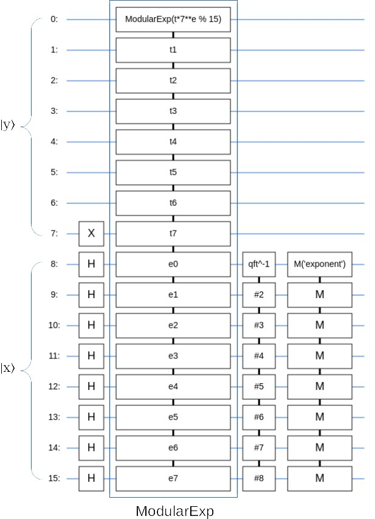
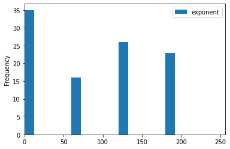

实战：用Cirq实现量子因式分解算法
Ping Zhou, 2021-07-02
前面的“量子因式分解系列”讨论了Shor算法和它的量子电路，今天切换到编程模式，用谷歌的Cirq框架来实现Shor算法，并用它来解决简单的因式分解问题。
导入依赖包
首先还是导入需要的包：
import fractions import math import random import sympy import cirq from cirq.contrib.svg import SVGCircuit from typing import Callable, List, Optional, Sequence, Union %matplotlib inline
指数取模运算
还记得Shor算法的量子电路吗？

首先，我们需要一个“指数取模”的量子变换 \(U_f\) :
\begin{matrix} U_f |x\rangle|y\rangle \rightarrow |x\rangle|ya^x \mod N\rangle \end{matrix}它的输入 \(|x\rangle|y\rangle\) ，输出是 \(|x\rangle|ya^x \mod N\rangle\) 。
在Cirq里面怎么实现这个变换呢？一种办法是按照我之前的文章《聊聊量子因式分解算法的实现》，从加法器和乘法器开始，逐层往上实现。这个工程量就大了，我们也没有真的量子计算机可以跑不是？另一种方法是，利用Cirq框架提供的ArithmeticOperation接口，用经典计算来模拟这个变换：
def mod_pow(a:int, x:int, N:int, y:int=1) -> int: p = y for i in range(x): p = (p * a) % N return p class ModularExp(cirq.ArithmeticOperation): def __init__( self, y: Sequence[cirq.Qid], x: Union[int, Sequence[cirq.Qid]], a: int, N: int, ) -> None: if len(y) < N.bit_length(): raise ValueError( f'Register with {len(y)} qubits is too small for N {N}' ) self.y = y self.x = x self.a = a self.N = N def registers(self) -> Sequence[Union[int, Sequence[cirq.Qid]]]: return self.y, self.x, self.a, self.N def with_registers( self, *new_registers: Union[int, Sequence['cirq.Qid']], ) -> 'ModularExp': if len(new_registers) != 4: raise ValueError( f'Expected 4 registers (y, x, a, ' f'N), but got {len(new_registers)}' ) y, x, a, N = new_registers if not isinstance(y, Sequence): raise ValueError(f'y must be a qubit register, got {type(y)}') if not isinstance(a, int): raise ValueError(f'a must be a classical constant, got {type(a)}') if not isinstance(N, int): raise ValueError(f'N must be a classical constant, got {type(N)}') return ModularExp(y, x, a, N) def apply(self, *register_values: int) -> int: assert len(register_values) == 4 y, x, a, N = register_values if y >= N: return y # return (y * a ** x) % N return mod_pow(a=a, x=x, N=N, y=y) def _circuit_diagram_info_( self, args: cirq.CircuitDiagramInfoArgs, ) -> cirq.CircuitDiagramInfo: assert args.known_qubits is not None wire_symbols: List[str] = [] t, e = 0, 0 for qubit in args.known_qubits: if qubit in self.y: if t == 0: if isinstance(self.x, Sequence): e_str = 'e' else: e_str = str(self.x) wire_symbols.append(f'ModularExp(t*{self.a}**{e_str} % {self.N})') else: wire_symbols.append('t' + str(t)) t += 1 if isinstance(self.x, Sequence) and qubit in self.x: wire_symbols.append('e' + str(e)) e += 1 return cirq.CircuitDiagramInfo(wire_symbols=tuple(wire_symbols))
利用cirq.ArithmeticOperation接口，模拟实现一个指数取模变换ModularExp，这其中的核心就是apply函数：
def apply(self, *register_values: int) -> int: assert len(register_values) == 4 y, x, a, N = register_values if y >= N: return y # return (y * a ** x) % N return mod_pow(a=a, x=x, N=N, y=y)
这个apply函数根据输入的寄存器值，返回指数取模的结果。这里我没有直接用Python的指数和取模运算，而是自己实现了一个，来模拟前文中用乘法取模实现指数取模的方法。
def mod_pow(a:int, x:int, N:int, y:int=1) -> int: p = y for i in range(x): p = (p * a) % N return p
构建量子电路
有了指数取模变换，接下来就可以把它接到量子电路里去了。
def make_order_finding_circuit(a: int, N: int) -> cirq.Circuit: N2 = N*N L = N2.bit_length() y = cirq.LineQubit.range(L) x = cirq.LineQubit.range(L, 2 * L) return cirq.Circuit( cirq.X(y[L - 1]), cirq.H.on_each(*x), ModularExp(y, x, a, N), cirq.qft(*x, inverse=True), cirq.measure(*x, key='exponent'), # This is not needed but it's an implicit measurement. # cirq.measure(*y, key='mod') )
首先计算需要多少个量子位L。前文说过，寄存器表示的最大值应不小于要分解的数N的平方，即 \(2^L \ge N^2\) 。
然后构建电路：
- 寄存器y初始化成 $|1⟩$；
- 寄存器x初始化为 \(|0\rangle\) ，加上H变换，把它制备成叠加态；
- 给x, y接上我们的ModularExp变换；
- 对寄存器x做量子傅立叶变换，然后测量；
- 寄存器y之后丢弃（其实是做了个隐性测量，不信你可以也给它接个测量试试）。
举个简单的例子，要分解的数N=15，随机选a=7，搭个电路试试看：
circuit = make_order_finding_circuit(a=7, N=15) SVGCircuit(circuit)
画出来是这样的：

然后我们来跑一下这个电路试试，采样100次：
result = cirq.sample(circuit, repetitions=100) result.data.plot(kind='hist', xlim=(0,256), bins=16)
可以看到，测量的结果集中在0到256之间的4个波峰上，这是因为，7对15的order是4（ \(7^4 \mod 15 = 1\) ），测量得到的结果集中在数轴的0/4, 1/4, 2/4, 3/4这四个波峰上。

Order Finder
搭建量子电路的函数有了，接下来把它包装到order finding函数里：
def quantum_order_finder( a: int, N: int, repetitions:int = 1 ) -> Optional[int]: if a < 2 or N <= a or math.gcd(a, N) > 1: raise ValueError(f'Invalid a={a} for N={N}.') circuit = make_order_finding_circuit(a, N) result = cirq.sample(circuit, repetitions=repetitions) nbits = result.measurements['exponent'].shape[1] for i in range(repetitions): exponent = result.data['exponent'][i] f = fractions.Fraction.from_float(exponent/(2**nbits)).limit_denominator(N) print('exponent measured:', exponent, 'nbits:', nbits, 'f:', f) if f.numerator != 0: r = f.denominator # Check if r is the order and if it's an even number. if (r % 2) == 0 and ((a ** r) % N) == 1: print(f'Found order r={r}!') return r return None
这个函数很简单，就是根据输入的a和N参数，构建量子电路，运行它，然后读出结果。
这里面一个重要的步骤是如何解读测量结果。我们测量得到的值，与 \(q=2^L\) 的比值，因该非常接近某个数k与r的比值。这里用了fractions包里的连分数算法：
f = fractions.Fraction.from_float(exponent/(2**nbits)).limit_denominator(N)
把测量得到的数exponent与 \(2^{nbit}\) 的比值，近似到分母小于N的一个分数，然后这个分母就可能是order。我们需要的order是偶数，所以还进一步做了判断，不符合条件的结果直接丢弃。
量子因式分解主函数
好了，order finding的实现有了，接下来可以实现量子因式分解的主函数了。
首先是一个辅助函数：输入要分解的数N，以及和它互质的数a，求解N的因子。
def quantum_factor_helper( N: int, a: int, repetitions:int = 10 ) -> Optional[int]: r = quantum_order_finder(a=a, N=N, repetitions=repetitions) if r is not None: k = (a**(r//2) % N) c1 = math.gcd(k - 1, N) c2 = math.gcd(k + 1, N) print(f'a={a}, N={N}, r={r}, k={k}, c1={c1}, c2={c2}') if c1 > 1 and c1 < N and math.gcd(c1, N) > 1: print(f'Factor of {N} is {c1}') return c1 if c2 > 1 and c2 < N and math.gcd(c2, N) > 1: print(f'Factor of {N} is {c2}') return c2 return None
这个辅助函数首先求解a对N的order，如果找到的话，计算 \(a^{r/2} \mod N - 1\) 和 \(a^{r/2} \mod N + 1\) ，这两个数至少有一个应是N的因子。如果没找到，就返回None。
主函数部分：
def quantum_factor( N: int, attempts: int = 30, seed: int = None ) -> Optional[int]: if type(N) is not int: raise TypeError("n must be an integer.") if N > (2 ** 30): raise ValueError("Number is too large. Try n <= 2^30.") if N < 1: raise ValueError("Number must be positive integer greater than 1.") if N % 2 == 0: print(f"{N} has trivial factor of 2.") return 2 if sympy.isprime(N): print(f'{N} is a prime number.') return None random.seed(seed) for i in range(attempts): a = random.randint(2, N-1) print(f'Randomly pick a={a}') gcd = math.gcd(a, N) if gcd > 1: print(f'gcd({a}, {N})={gcd}, found factor!') return gcd print('Calling quantum order finding') c = quantum_factor_helper(a=a, N=N) if c is not None: print(f'Found factor {c}!') return c
主函数输入参数N就是要分解的数，还有个attempts参数，告诉它我们想最多重复运行多少次算法。因为Shor算法是一个随机算法，不保证一次就能得到所需的结果，可能需要运行多次。
在执行Shor算法前，首先对输入做一些判断，例如N太大，N是偶数，以及N是质数，这些情况下不需要运行Shor算法，直接返回。
然后进入主循环，每次在2到N-1之间选一个随机的数a，如果它与N不互质，那么我们已经找到了N的因子，问题解决，否则就对它求解order，然后order算出N的因子。
测试一下
我们用主函数 quantum_factor 测试一下，分解N=21：
quantum_factor(21)
得到类似这样的输出（因为算法的随机性，每次运行的结果都会有所不同）：
Randomly pick a=19 Calling quantum order finding exponent measured: 256 nbits: 9 f: 1/2 exponent measured: 0 nbits: 9 f: 0 exponent measured: 342 nbits: 9 f: 2/3 exponent measured: 85 nbits: 9 f: 1/6 Found order r=6! a=19, N=21, r=6, k=13, c1=3, c2=7 Factor of 21 is 3 Found factor 3!
计算成功！我们找到了N=21的因子3。